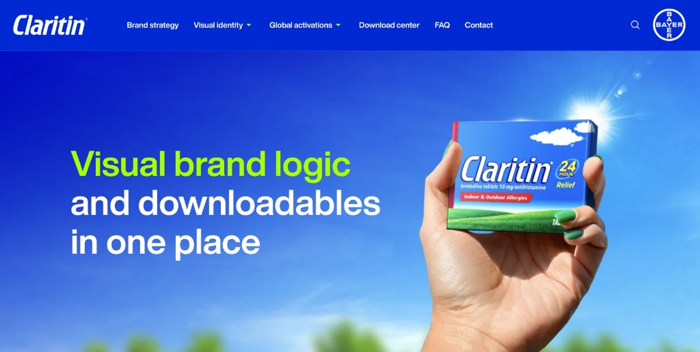
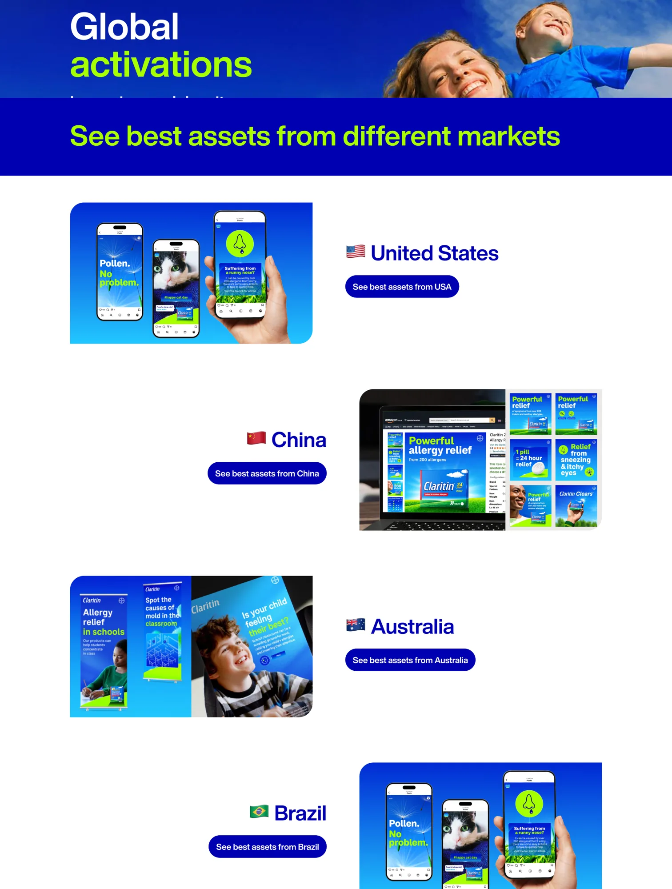
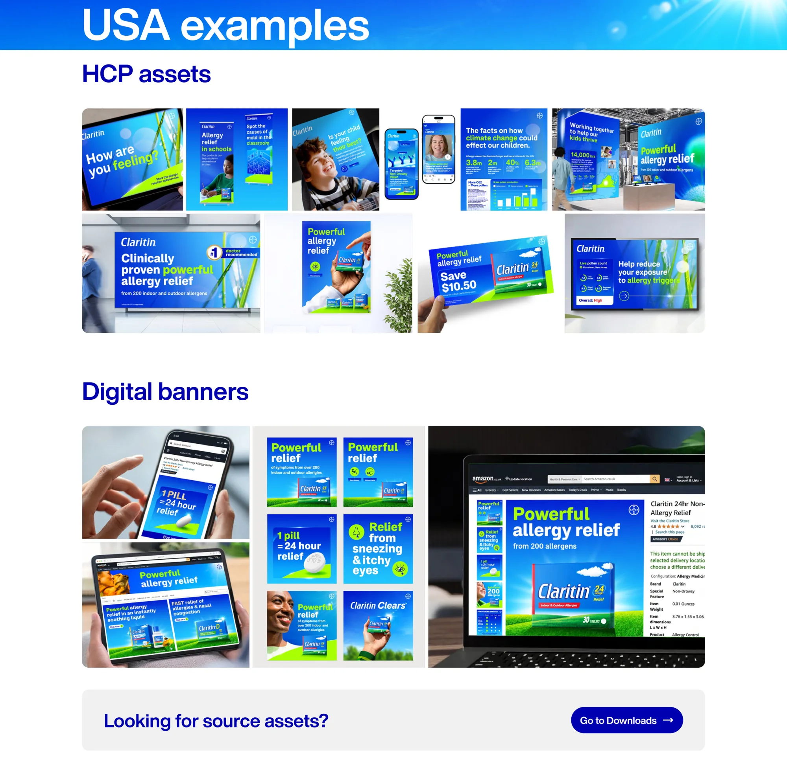
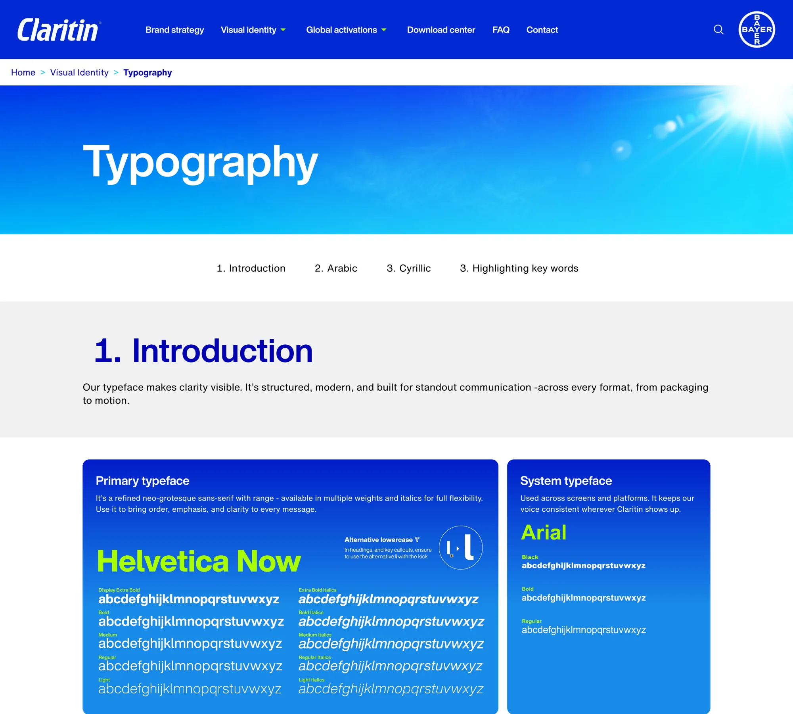
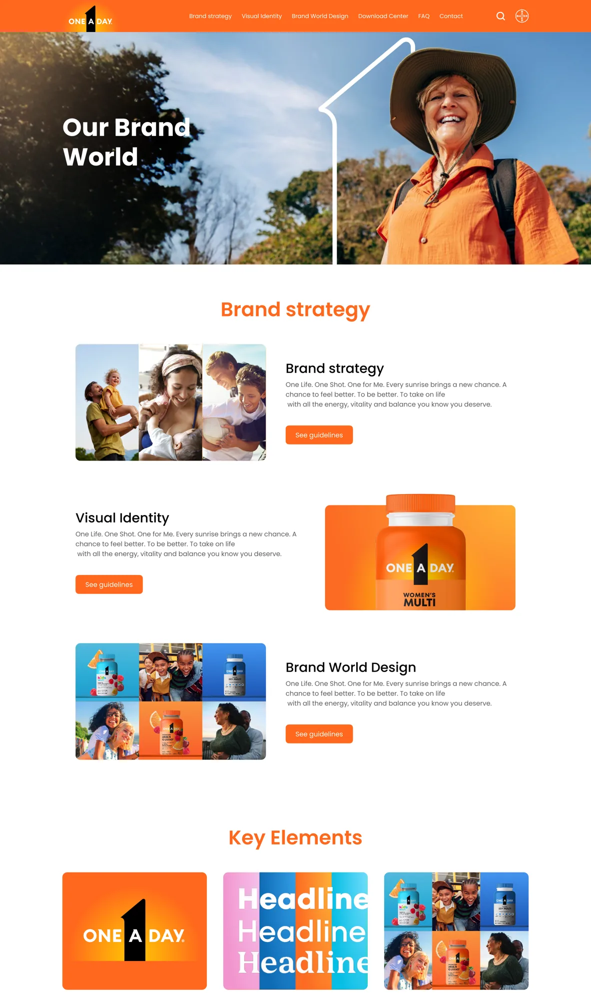
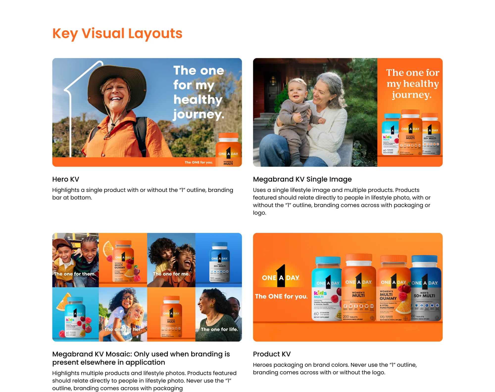
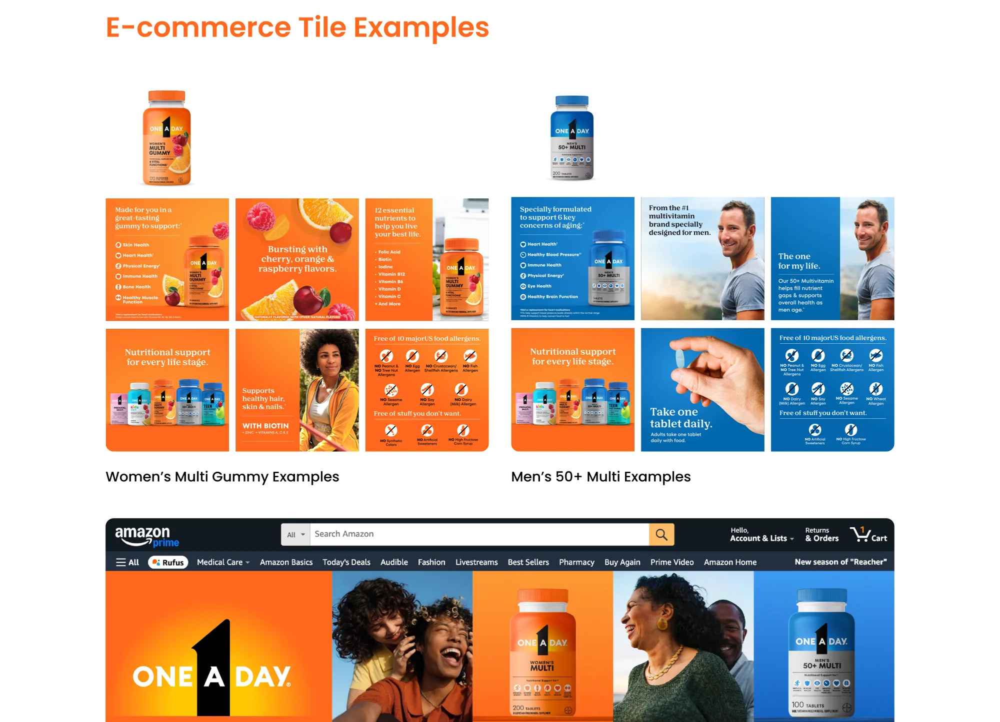

A brand guideline is a document about how things should be. A brand hub is a bet about how people actually work — under a deadline, on a Friday, three time zones from whoever wrote the rule. I’ve built two of them: web properties on our internal web platform where partners, agencies, and internal teams all work from the same place. This is the argument behind them — that governance fails at the moment of work, not the moment of writing.

Every brand has a standard. The standard is almost never where the work is. It lives in a PDF, wherever the last person emailed it, and so “is this correct?” becomes a question you have to ask a person — if you can find the person, and if you have the time.
That gap is where brands actually break. Not in a meeting where someone argues against the guideline, but on a Friday afternoon when the deck is due, the right logo lockup is three folders deep in someone else’s inbox, and guessing is faster than finding. The rule didn’t fail. The distance between the rule and the moment of work failed.
So I stopped treating this as a documentation problem and started treating it as a findability problem. A hub isn’t a nicer PDF. It’s the bet that if the correct thing is the easiest thing to reach, correctness stops depending on who you know and how much time you have.
The thing people underestimate about a global brand system is that regions don’t all use the same assets.
A market draws a different subset depending on its regulatory position, its retail environment, and what it’s actually launching. So the system has to hold a single standard while different regions legitimately pull different things from it. Governing that is a different job from governing one market — and pretending the variance shouldn’t exist is how global systems get quietly ignored.
That reframes the goal. The job isn’t to force uniformity; it’s to govern the variance — to make the non-negotiable core impossible to miss while making each market’s legitimate choices easy to reach. A screenshot can show what the hub looks like. It can’t show how that works, so I drew it.



The other hub is US, built around the One A Day portfolio relaunch. Its whole purpose is unglamorous and exactly the point: give the brand one address. Partners, agencies, and internal teams all work from the same place, so the current pack, the right palette, and the cleared claim are the defaults rather than something you reconstruct from memory.
To be precise about my role: I operationalized this — I built and ran the hub that makes the system usable. The relaunch creative itself was brand-team and agency-led. Building the place where a system lives is a different job from owning the brand, and it’s the job this page is about.



These get built cross-functionally — marketing, design and legal in it together — with agency support for the implementation. Having legal in from the start rather than at the end is the difference between compliance being designed in and compliance being inspected in. When the reviewer helped decide how the system is structured, “is this allowed?” is answered by the hub’s architecture instead of by a rejection two days before the deadline.
The honest note on agencies: this isn’t an argument against them. Agency partners did the implementation and did it well. It’s an argument about what you should be paying them for — execution against a system you own and operate, not the ownership of the system itself. Keep the governance in-house and cross-functional; buy the build.
A design system at this scale is too big to browse. And people don’t fail to follow the guidelines because they disagree with them — they fail because they can’t find the right asset in the time they have. That’s the same failure from the top of this page, just larger.
So we built conversational agents into the hubs. You ask for what you need and the system takes you to it. That’s the difference between a brand centre that exists and a brand centre people actually use. I want to be clear that this isn’t an AI story — it’s an adoption story. The agent is what taking “findability is the governance problem” seriously looks like once the system is too big for a human to hold in their head.
An illustration of the interaction, not a capture of the production hub. The point is the pattern: ask for what you need, arrive at the right asset — findability as the governance move.
What people search for and fail to find is a brief. A hub knows where correctness is expensive — the searches that dead-end, the assets requested for markets that don’t have them yet. That signal should feed the roadmap, so the system fixes the gaps that are actually costing people time instead of the ones we assume.
Right now the agent solves findability — take me to the thing. The next step is the harder question: can I do this? An agent that reasons over the rules — this claim in this market, this lockup on this background — turns the hub from a library into a governor that answers at the moment of the decision.
The last mile is not making people visit the hub. It’s the hub pushing the correct, current asset out to where the work already happens — the deck, the retailer portal, the DAM — so the right thing arrives without a trip. Governance you don’t have to go looking for is governance that finally wins the Friday-afternoon decision.
A guideline tells people what’s right. A hub makes what’s right the easiest thing to reach — and that’s the only version of governance that survives a deadline.